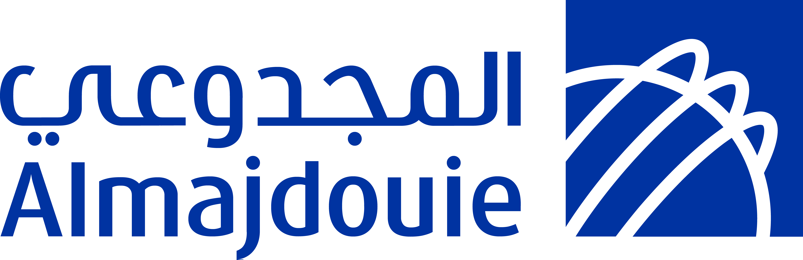

نصنـع محتوى يعبّر عنّا
نكتب بوضوح وثقة، ونوصل رسالتنا بما يليق بالمجدوعي.

من رسالة واضحة إلى عرض متكامل، سند يساعدك على التعبير عن المجدوعي بلغتها وهويتها، في أعمالك اليومية.
نكتب بوضوح وثقة، ونوصل رسالتنا بما يليق بالمجدوعي.
نوحّد أسلوب عروضنا وتصاميمنا، ونعتني بالتفاصيل.
نحوّل أفكارنا إلى أعمال متّسقة، ونراجعها قبل مشاركتها.
اختر مساعدك الذكي، وابدأ من مرجع واحد للكتابة والتصميم.